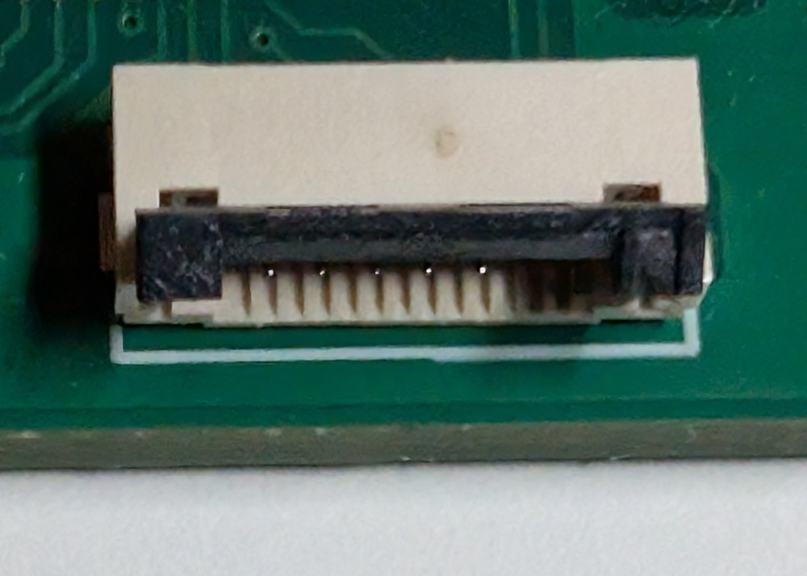
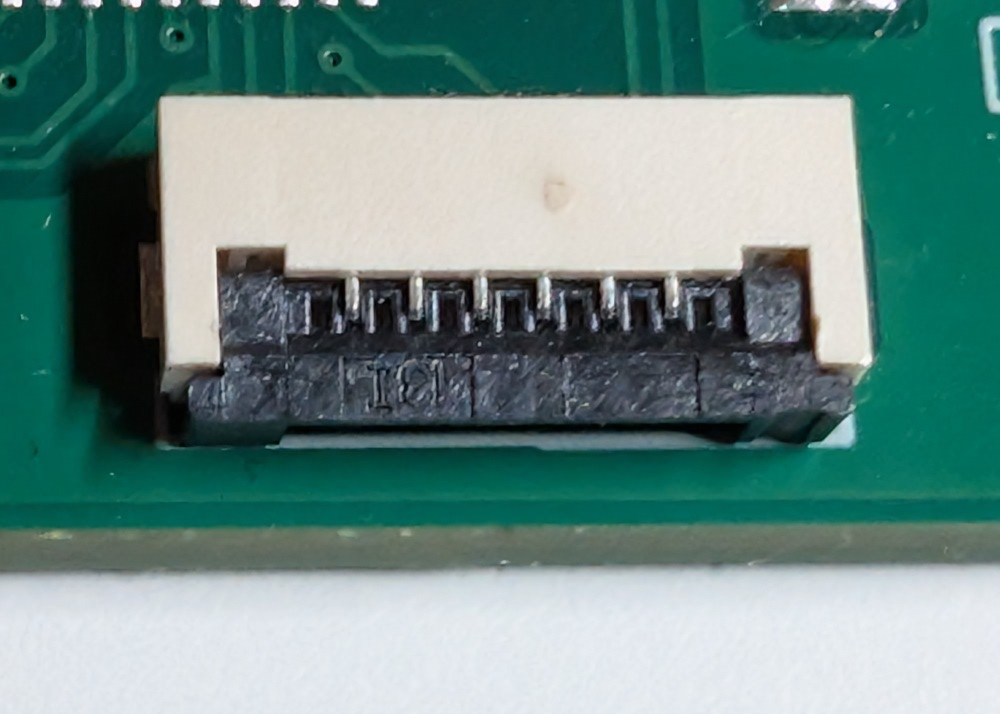
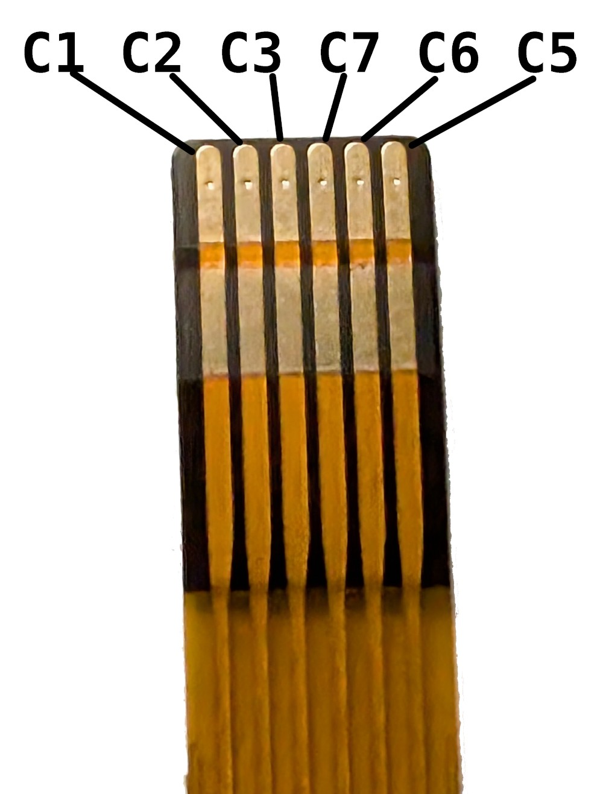
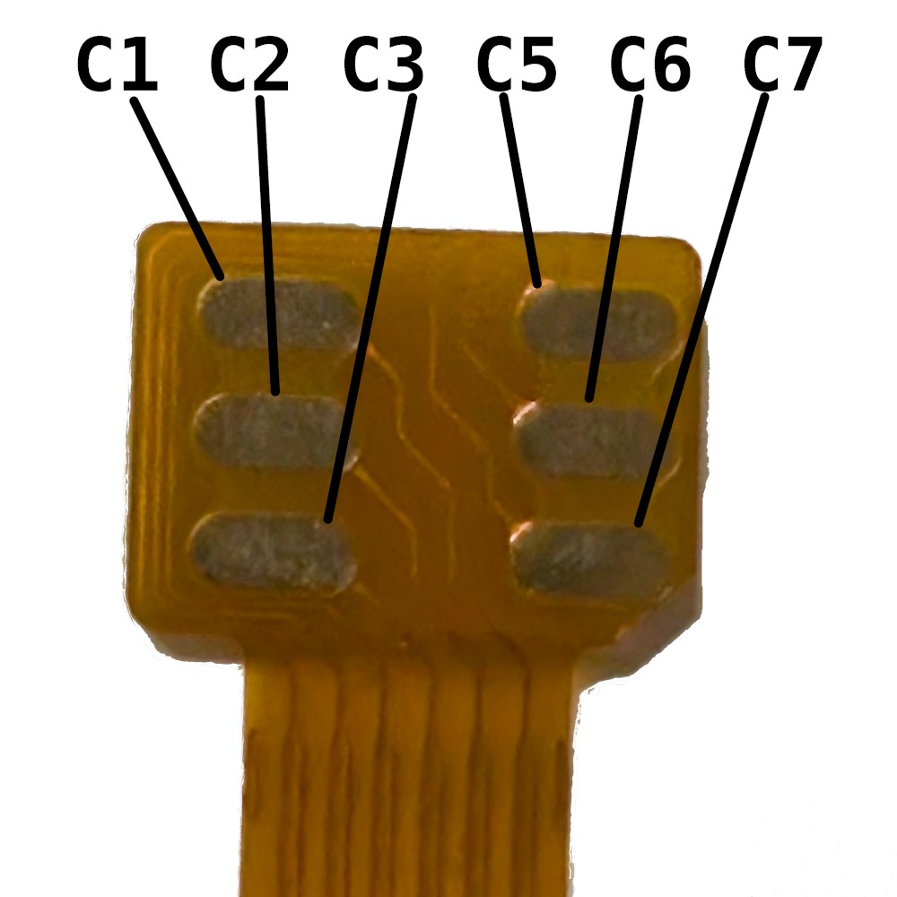

FPC Cable & Compatibility
Connection guide and compatibility information for FPC cables between SIMux and target devices.
FPC Cable Specifications
Standard FPC Cable
Parameter |
Value |
|---|---|
Pins |
6 |
Pitch |
1.0 mm |
Device side rotation |
Determined by target device |
Lengths Available |
custom availabilyty |
SIMux FPC Connector
Connector Type: Bottom contact, flip-lock
Orientation: Contacts facing down (toward PCB)
Insertion: Insert cable fully, then close black latch
Socket Opened

Socket Closed

Standard SIM Pinout (ISO 7816-3)
SIMux follows standard ISO/IEC 7816-3 pinout:
Pin |
Signal |
ISO 7816 |
Function |
Direction |
|---|---|---|---|---|
1 |
VCC |
C1 |
Power supply (1.8V or 3V) |
Power |
2 |
RST |
C2 |
Reset |
← From target |
3 |
CLK |
C3 |
Clock |
← From target |
4 |
I/O |
C7 |
I/O - Bidirectional data |
↔ Bidirectional |
5 |
VPP |
C6 |
Programming voltage |
← From target (often unused) |
6 |
GND |
C5 |
Ground |
Power |
Pinout board-side
Bottom view

Pinout DUT-side
Bottom view

Note
Power Source: SIM cards are powered by the target device, not by SIMux. SIMux only switches which SIM’s power line connects to the target.
Warning
Always verify pinout before connecting! ISO 7816 is standard but pinout on FPC cable needs to be the same.
FPC Cable Sources
Delivered with SIMux
FPC cable can be produced to match DUT SIM slot orientation and FPC shape.
Custom Cable Manufacturers
For non-standard pinouts or lengths:
Custom FPC design and manufacturing compatible with SIMux
Custom Cable Specs:
Provide pinout diagram
Specify length and contact orientation
Safety Checklist
Power off target device
Verify pinout matches ISO 7816
Check FPC cable integrity
Connect SIMux with SIM card installed
Connect FPC to target device
Select SIM on SIMux (e.g., SIM 1)
Power on target device
Verify SIM detected by target
Test switching SIMs with target powered on (if supported)
Next Sections
System Architecture - How SIM signals are routed
Specifications - Pin-level electrical details
Extension Boards - Multi-board setups